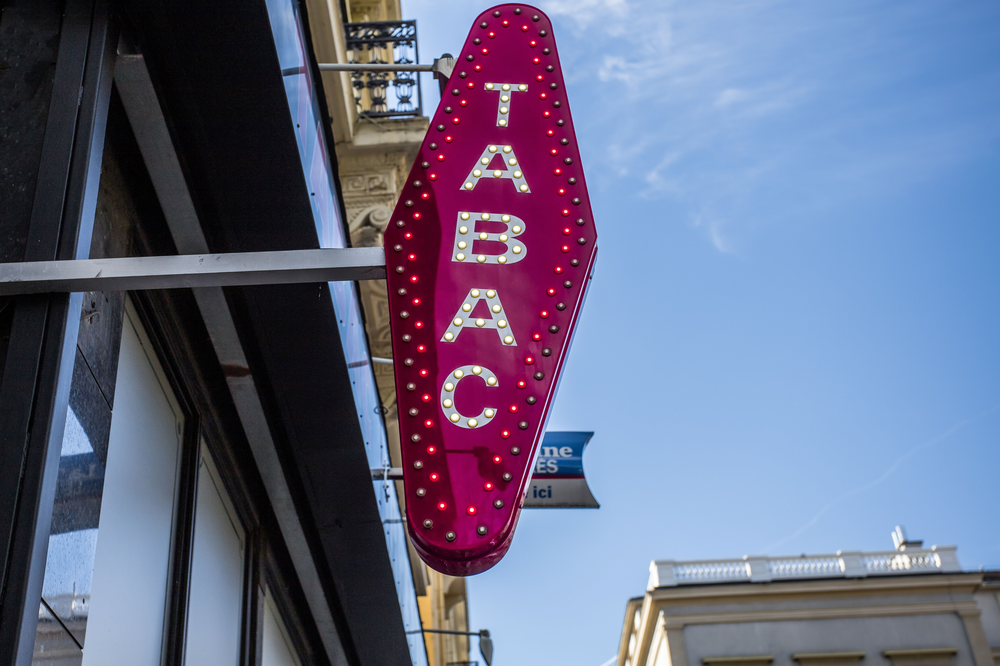
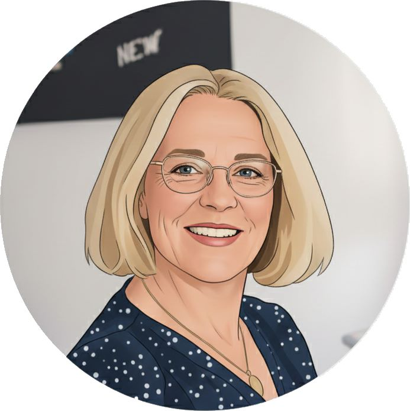
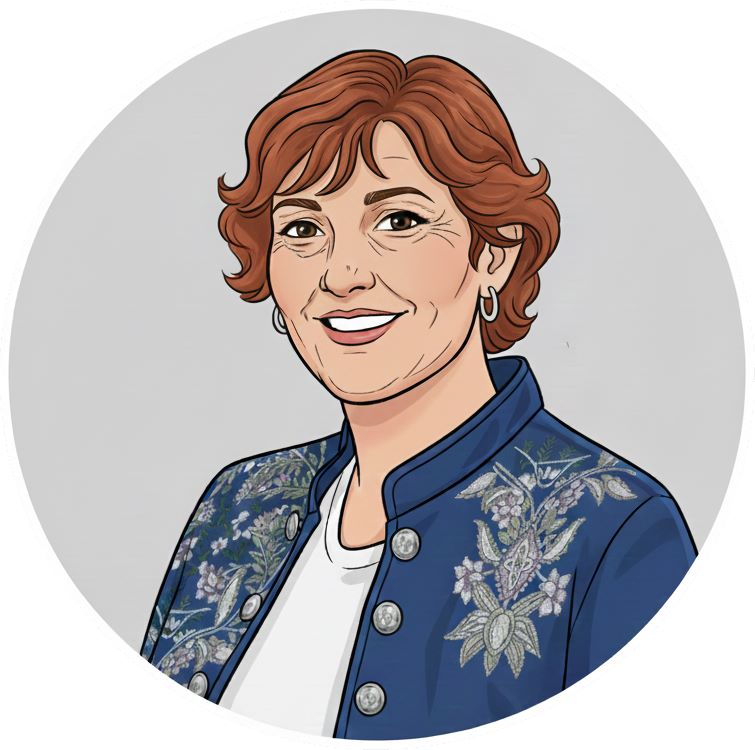

Performance
des prestations étendues pour vous accompagner durablement et efficacement à long terme
Fondé en 2014 dans le prolongement du Cabinet Carré et Associés existant depuis 2001, le Cabinet Carré Expertise et Conseil est né de la volonté de créer une structure vouée à mettre ses compétences au service des entrepreneurs désireux de nouer une relation de proximité.
Cabinet à taille humaine, nous privilégions un accompagnement stable et performant sur le long terme.
Notre souplesse d’action nous permet de proposer des solutions à tous les types d’entreprise et à tous les stades de leur vie, quel que soit leur secteur d’activité et leur situation géographique.
Notre organisation nous permet d’assurer une réactivité optimale pour répondre au mieux à toutes vos attentes dans le respect des normes professionnelles.
Le Cabinet Carré Expertise et Conseil vous propose une gamme de prestations administratives, comptables, fiscales, juridiques et sociales pour vous assister à tous les stades de votre activité professionnelle.
Une équipe expérimentée, stable et dynamique est à votre écoute pour entretenir une relation de proximité avec une réactivité permettant d’assurer un travail de qualité.
La rigueur des chiffres – la souplesse de l’analyse
Une organisation et un fonctionnement fondés sur des valeurs fortes pour mettre notre expertise au service de votre entreprise.
Que vous soyez créateur d’entreprise, dirigeant d’une TPE, d’une PME, d’une PMI,
profession libérale
ou toute autre personne pouvant avoir besoin de nos services, n’hésitez pas à nous solliciter pour en parler.
des prestations étendues pour vous accompagner durablement et efficacement à long terme
un interlocuteur dédié vous accompagne dans votre projet
nous écoutons vos projets et enjeux, les analysons ensemble pour vous conseiller
tout est mis en œuvre pour vous apporter des solutions adaptées à vos demandes
nous garantissons la confidentialité des missions qui nous sont confiées
Le Cabinet Carré Expertise et Conseil intervient dans tous les secteurs d’activité.
Nous avons développé des compétences particulières dans les domaines suivants :
Doté d’un réseau de partenaires : avocats, banquiers, gestionnaires de patrimoine…
 Hôtellerie – restauration
Hôtellerie – restauration
 Associations
Associations Recyclage de métaux
BTP
Recyclage de métaux
BTP
 Galerie d’art
Galerie d’art

Débitants de tabac Commerces alimentaires
Commerces alimentaires Salons de coiffure
Salons de coiffure Institut de beauté
Administrateurs de biens
Institut de beauté
Administrateurs de biensAprès avoir obtenu son diplôme d’expertise comptable en 1995, Frédérique Carré a exercé dans des cabinets de différentes taille : du cabinet à taille humaine aux grands cabinets d’audit.
De la richesse des expériences acquises durant ce parcours auprès d’une gamme de clients aux exigences renouvelées est née la volonté de créer une structure à taille humaine vouée à mettre ses compétences au service des entrepreneurs désireux de nouer une relation de proximité à long terme.
Frédérique Carré est inscrite à l’ordre des experts-comptables de la région parisienne et à la compagnie des commissaires aux comptes de Paris. Soucieuse de transmettre sa passion du métier aux jeunes générations, elle a développé en parallèle des fonctions d’enseignement en Master CCA à l’IAE Gustave Eiffel et dans le cadre de la préparation au DSCG.

Experte-comptable

Associée
Collaboratrice
Marie Saulnier et Adeline Beaubie
Grâce à la complémentarité de leurs expériences, elles vous assistent efficacement à chaque étape du développement de votre activité.
Marie Saulnier possède une solide expérience de plus de 40 ans acquise dans plusieurs cabinets d’expertise-comptable, avant de participer activement à la création du cabinet en 2014.
Adeline Beaubie s’est orientée vers la comptabilité en 2010, après avoir occupé des postes d’assistante de gestion dans diverses structures. Présente au cabinet depuis sa création, elle met à profit ses compétences diversifiées au service d’une clientèle variée.